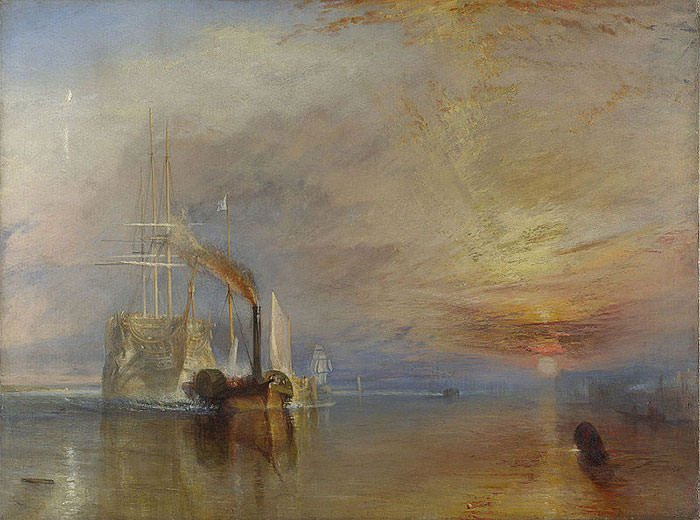

Intro
The Age of Revolution is the period from approximately 1774 to 1849 in which a number of significant revolutionary movements occurred in many parts of Europe and the Americas. The period is noted for the change in government from absolutist monarchies to constitutionalist states and republics. The Age of Revolution includes the American Revolution, the French Revolution, the Irish Rebellion of 1798, the Haitian Revolution, the revolt of slaves in Latin America, the First Italian War of Independence, Sicilian revolution of 1848, and the 1848 revolutions in Italy; and the independence movements of Spanish and Portuguese colonies in Latin America. That's a lot of revolutions in a small period. The period would generally weaken the imperialist European states, who would lose major assets throughout the New World. For the British, the loss of the Thirteen Colonies would bring a change in direction for the British Empire, with Asia and the Pacific becoming new targets for expansion.
Romanticism
Romanticism, attitude or intellectual orientation that characterized many works of literature, painting, music, architecture, criticism, and historiography in Western civilization over a period from the late 18th to the mid-19th century. Romanticism can be seen as a rejection of the precepts of order, calm, harmony, balance, idealization, and rationality that typified Classicism in general and late 18th-century Neoclassicism in particular. It was also to some extent a reaction against the Enlightenment and against 18th-century rationalism and physical materialism in general. Romanticism emphasized the individual, the subjective, the irrational, the imaginative, the personal, the spontaneous, the emotional, the visionary, and the transcendental.
Check out the next page to learn more about all of this!
J. M. W. Turner
Click on the images to get more info about the work.
The Fighting Temeraire

HMS Temeraire was a 98-gun second-rate warship of the Royal Navy which is famous for its heroic performance in the 1805 Battle of Trafalgar between U.K. and the combined fleets of French and Spanish Navies. J.M.W. Turner depicts the warship, years after its glorious days, being pulled by a tugboat, to be broken into scraps. The painting pays a tribute to sailing ships as they were going to be replaced by steam-powered vessels. Turner uses symbolism, like the setting sun, to suggest the demise of the subject and its mortality despite its heroic past. Painted by Turner at the prime of his career, The Fighting Temeraire is his most famous painting and the one he referred to as his “darling”. In 2005, it was voted as Britain’s favourite painting in a poll organized by the BBC.
Rain, Steam and Speed
In this famous artwork, Turner masterfully combines the elements of nature and the industrial revolution. The painting depicts a train approaching the viewer at high speed. The rain blends into the steam of the speeding train to leave the powerful black engine of the locomotive as the only visibly sharp object on the canvas. The location of the scene is the Maidenhead Railway Bridge which crosses River Thames. Rain, Steam and Speed is an outstanding example of J.M.W. Turner’s late works, which gained in popularity with time to become his most cherished masterpieces and are considered a forerunner to Impressionism.
The Slave Ship
In the 1781 Zong massacre, 133 enslaved Africans were thrown into the sea to drown by the crew of the slave ship Zong. This was done partly to ensure the survival of the ship’s remaining inhabitants and partly to cash on the insurance on the slaves. This event is considered the inspiration behind this masterpiece, which was first exhibited on the same day as a meeting of the British Anti-Slavery Society. The painting depicts a ship struggling in the stormy sea while a number of bodies with dark skin, and chained hands and feet, are floating in water. The picture is blurry without defined brush strokes and Turner brilliantly uses colour to create a dramatic effect for the viewer. The Slave Ship focuses on the power of nature over man and the vices of the Industrial Revolution.
Hannibal crossing the Alps
Hannibal is considered one of the greatest military commanders in history. He led his Carthaginian army over the Alps and into Italy to take the war directly to the Roman Republic. Hannibal’s crossing of the Alps in 218 BC is one of the most celebrated military achievements in ancient warfare. As much as this painting captures this historic event, it brings to the fore the destructive power of natural forces, a prevalent theme in many of Turner’s later works. Hannibal crossing the Alps, known for parallels between Hannibal and Napoleon, is one of the most ambitious and renowned artworks of Turner’s early career.
The Dort
J.M.W. Turner first visited the Netherlands in 1817. This painting shows a view of the harbour of Dordrecht, a city in western Netherlands. It is the finest example of the influence of Dutch marine painting on Turner’s work and a tribute to Dutch artist Aelbert Cuyp, one of Turner’s formative influences. On its exhibition, The Dort was hailed as “one of the most magnificent pictures ever exhibited” by the Morning Chronicle and Turner’s contemporary, English Romantic painter John Constable, called it the “most complete work of a genius I ever saw."
Samuel Taylor Coleridge
Click on the images to get more info about the work.
TThe Rime of the Ancient Mariner
Samuel Taylor Coleridge used many archaic spellings in "The Rime of the Ancient Mariner." The word "rime" refers both to a "rhyme" or poem and to a kind of frost that the Mariner encountered on his journey to the Antarctic. On the most basic level, the rime is about the ancient Mariner. It's also an adventure story about a journey through the "rime" or frost of the South Pole.
The albatross itself is a symbol of innocence and beauty. When the seaman hang the dead albatross around the Mariner's neck, it becomes a symbol of his sin, which he bears like a mark of shame. Ultimately, the albatross' death leads the Mariner to a spiritual epiphany, allowing him to understand his relationship with God and nature.
Coleridge personifies the figures of both Death and Life-in-Death, depicting them as two supernatural beings playing dice in order to determine the Mariner's fate. Death takes the two hundred hired seaman on the Mariner's ship, but Life-in-Death wins the Mariner, whose "ancient" appearance suggests, if not immortality, then a wizened old age.
The Eolian Harp
The Eolian Harp is a poem written by Samuel Taylor Coleridge in 1795 and published in his 1796 poetry collection. It is one of the early conversation poems and discusses Coleridge's anticipation of a marriage with Sara Fricker along with the pleasure of conjugal love. However, The Eolian Harp is not a love poem and instead focuses on man's relationship with nature. The central images of the poem is an Aeolian harp, an item that represents both order and wildness in nature. Along with the harp is a series of oppositional ideas that are reconciled with each other. The Eolian Harp also contains a discussion on "One Life", Coleridge's idea that humanity and nature are united along with his desire to try to find the divine within nature. The poem was well received for both its discussion of nature and its aesthetic qualities.
Frost at Midnight
Frost at Midnight is a poem by Samuel Taylor Coleridge, written in February 1798. Part of the conversation poems, the poem discusses Coleridge's childhood experience in a negative manner and emphasizes the need to be raised in the countryside. The poem expresses hope that Coleridge's son, Hartley, would be able to experience a childhood that his father could not and become a true "child of nature". The view of nature within the poem has a strong Christian element in that Coleridge believed that nature represents a physical presence of God's word and that the poem is steeped in Coleridge's understanding of Neoplatonism. Frost at Midnight has been well received by critics, and is seen as the best of the conversation poems.
Fears in Solitude
Fears in Solitude, written in April 1798, is one of the conversation poems by Samuel Taylor Coleridge. The poem was composed while France threatened to invade Great Britain. Although Coleridge was opposed to the British government, the poem sides with the British people in a patriotic defense of their homeland. The poem also emphasizes a desire to protect one's family and to live a simple life in harmony with nature. The critical response to the poem was mixed, with some critics claiming that the work was "alarmist" and anti-British.
The Nightingale: A Conversation Poem
The Nightingale: A Conversation Poem is a poem written by Samuel Taylor Coleridge in April 1798. Originally included in the joint collection of poems called Lyrical Ballads, the poem disputes the traditional idea that nightingales are connected to the idea of melancholy. Instead, the nightingale represents to Coleridge the experience of nature. Midway through the poem, the narrator stops discussing the nightingale in order to describe a mysterious female and a gothic scene. After the narrator is returned to his original train of thought by the nightingale's song, the narrator recalls a moment when he took his crying son out to see the moon, which immediately filled the child with joy. Critics have found the poem either decent with little complaint or as one of his better poems containing beautiful lines.
Johannes Brahms
Click on the images to get more info about the work.
Hungarian Dances
The Hungarian Dances by Johannes Brahms, are a set of 21 lively dance tunes based mostly on Hungarian themes, completed in 1869.
They vary from about a minute to five minutes in length. They are among Brahms's most popular works, and were certainly the most profitable for him. Each dance has been arranged for a wide variety of instruments and ensembles. Brahms originally wrote the version for piano four hands and later arranged the first 10 dances for solo piano.
Only numbers 11, 14 and 16 are entirely original compositions. The better-known Hungarian Dances include No. 1 and 5, the latter which was based on the csárdás by Hungarian composer Béla Kéler titled Bártfai emlék, which Brahms mistakenly thought was a traditional folksong.
The Hungarian Dances bear many resemblances to, and may have influenced, the Slavonic Dances of Antonín Dvořák.
Piano Quintet
The Piano Quintet in F minor, Op. 34, by Johannes Brahms was completed during the summer of 1864 and published in 1865. It was dedicated to Her Royal Highness Princess Anna of Hesse. Like most piano quintets composed after Robert Schumann's Piano Quintet (1842), it is written for piano and string quartet (two violins, viola and cello).
The work, "often called the crown of his chamber music,"[3] began life as a string quintet (completed in 1862 and scored for two violins, viola and two cellos). Brahms transcribed the quintet into a sonata for two pianos (in which form Brahms and Carl Tausig performed it) before giving it its final form. Brahms destroyed the original version for string quintet, but published the Sonata as Op. 34b. The outer movements are more adventurous than usual in terms of harmony and are unsettling in effect. The introduction to the finale, with its rising figure in semitones, is especially remarkable. Piano and strings play an equally important role throughout this work, which Swafford notes for its "unity of expression" and a consistently dark mood: "at times anguished, at times (in the scherzo) demonic, at times tragic.
Symphony No. 1 (Brahms)
Unique among Brahms' symphonies, the First Symphony is ushered in via a formal introduction (an 1862 score of the symphony originally started with the Allegro section). After a processional opening section featuring chaotic syncopated rhythms underpinned by pulsating timpani, the woodwinds and pizzicato strings play with thematic phrases to be fully explored in the following exposition. A short and stormy return to the original development, this time in the dominant of G and supported by rolling timpani, is finally followed by further melodic introductions played by oboe, flute and cellos before resolving in a drawn-out transitional passage ending with a plucked G note in the cellos.
The exposition begins abruptly, echoing the introduction's plucked final note with an orchestral exclamation, followed by a short motto which leads to the main theme, which is initially played, stridently, by the violins. The overall mood is "savagely energetic" and "scherzo-like" in 6
8 time. As the responsibility for the main theme shifts from the violins to the woodwinds, the strings and timpani begin to sound out a da-da-da-DUM rhythm which is strongly reminiscent of the "fate" rhythm of Beethoven's Fifth Symphony.
An extended transition leads to the arrival of the key of E♭ major which in turn introduces the flowing and heart-easing second theme. This theme, which is related to the motto used to open the movement, is carried out in the wind section, led by oboe and clarinet with support from the bassoon and eventually the French horns. Strong intervention from the violas ends this peaceful passage with a descending minor key sequence which opens to a new closing theme leading up to a final bombastic passage wrapping up the exposition. The score then calls for a full repeat, which requires an abrupt return to C minor.
Horn Trio
The Horn Trio in E-flat major, Op. 40, by Johannes Brahms is a chamber piece in four movements written for natural horn, violin, and piano. Composed in 1865, the work commemorates the death of Brahms's mother, Christiane, earlier that year. However, it draws on a theme which Brahms had composed twelve years previously but did not publish at the time. The work was first performed in Zurich on November 28, 1865, and was published a year later in November 1866. The Horn Trio was the last chamber piece Brahms wrote for the next eight years. Brahms chose to write the work for natural horn rather than valve horn despite the fact that the valve horn was becoming more common. The timbre of the natural horn is more somber and melancholic than the valve horn and creates a much different mood. Nineteenth-century listeners associated the sound of the natural horn with nature and the calls of the hunt. Fittingly, Brahms once said that the opening theme of the first movement came to him while he was walking through the woods. Brahms also learned natural horn (as well as piano and cello) as a child, which may be another reason why he chose to write for these instruments following the death of his mother. Brahms revised the trio in 1891.
Piano Sonata No. 3
The Piano Sonata No. 3 in F minor, Op. 5 of Johannes Brahms was written in 1853 and published the following year. The sonata is unusually large, consisting of five movements, as opposed to the traditional three or four. When he wrote this piano sonata, the genre was seen by many to be past its heyday. Brahms, enamored of Beethoven and the classical style, composed Piano Sonata No. 3 with a masterful combination of free Romantic spirit and strict classical architecture. As a further testament to Brahms' affinity for Beethoven, the Piano Sonata is infused with the instantly recognizable motive from Beethoven's Symphony No. 5 during the first, third, and fourth movements. Composed in Düsseldorf, it marks the end of his cycle of three sonatas, and was presented to Robert Schumann in November of that year; it was the last work that Brahms submitted to Schumann for commentary. Brahms was barely 20 years old at its composition. The piece is dedicated to Countess Ida von Hohenthal of Leipzig. A performance of the work generally lasts between 30 and 40 minutes, depending on whether repeats are observed.